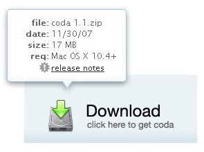
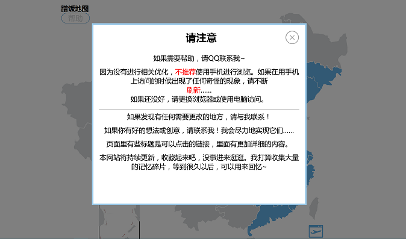

利用jQuery实现悬浮弹出提示框功能
我们在日常浏览网站的时候，经常会遇到这样一幕：当鼠标移到某些地方时，其旁边便会弹出一个小小的提示框，告知一些信息。而当鼠标移开的时候，这个提示框也会随之消失。抑或是点击某个链接，弹出一个覆盖全页的悬浮框。
 其中第二种通常会带有一个半透明遮罩，用以区分提示框与原页面。
这样做的好处显而易见，不仅美观，而且不用在各个页面之间来回跳跃，节省了浏览时间。
要实现这个功能，主要用到了 jQuery hide() 和 show() 方法。第一种还要结合 mouseenter() 和 mouseleave() 方法使用。
我想了一种简陋的实现方法，还算容易理解。
思路：
第一种是当鼠标移到目标元素上时显示，且不会随着鼠标移动（在所选元素内移动）而改变位置。这样只需事先在预定位置设置好提示框，并且在CSS中设置 display: none; 这样，加载页面时提示框就不会显示。然后，设置当鼠标进入目标元素时显示提示框，离开目标元素时隐藏提示框。然而，这样无法做到以淡出的方式显示提示信息，也无法做到将鼠标移动到提示信息的区域之上，提示信息继续保留。
第二种要简单些，事先在预定位置设置好提示框，设置隐藏。然后目标链接设置 onclick="jQuery(“#提示框ID”).show()" ，就可以实现点击显示了。然后在提示框中设置一个返回链接，设置 onclick="jQuery('#提示框ID').hide()" ，就可以实现点击返回了。